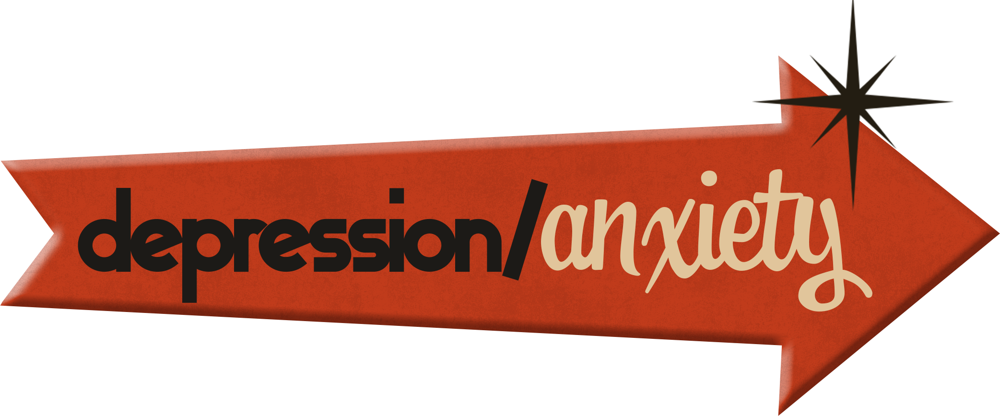

<div style="position: relative; width: 100%; max-width: 1100px; margin: 0 auto; display: inline-block;">
  
  

  <a href="/medical-diagnosis" style="position: absolute; width: 51.63%; height: 18.82%; left: 25.91%; top: 0.27%;">
    
  </a>

  <a href="/job-loss-breakup" style="position: absolute; width: 48.26%; height: 24.91%; left: 35.91%; top: 12.74%;">
    
  </a>

  <a href="/grief-loss" style="position: absolute; width: 48.98%; height: 24.08%; left: 22.46%; top: 27.10%;">
    
  </a>

  <a href="/depression-anxiety" style="position: absolute; width: 48.30%; height: 26.92%; left: 35.26%; top: 38.62%;">
    
  </a>

  <a href="/birthday" style="position: absolute; width: 48.42%; height: 23.26%; left: 23.17%; top: 56.18%;">
    
  </a>

  <a href="/thank-you" style="position: absolute; width: 48.44%; height: 23.49%; left: 35.10%; top: 70.69%;">
    
  </a>

</div>